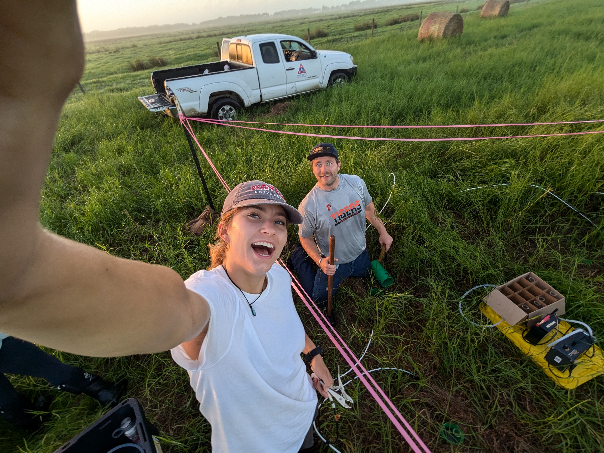

Forests to understand farms
Forests maintain high productivity through tight nutrient recycling and complex interactions above and belowground. Understanding how forests feed themselves can inform how we design sustainable, productive landscapes.
I'm an ecologist and biogeochemist. A fertilized pasture beside an unfertilized one, a canopy soil against the forest floor — these are natural experiments. Understanding what separates two obviously different settings is often the clearest way to see how limitation governs assembly.
When does the return stop justifying the cost?
Plants rely on microbial associates to cycle the nutrients essential for life, so the assembly of rhizosphere communities can both control resources belowground and structure communities aboveground. What governs that assembly is usually some form of limitation, and limitation forces trade-offs. There is generally a threshold where the return stops justifying the cost, and that threshold is where the interesting ecology sits.
I use basic science to design applied systems, and applied systems to understand basic science.
Forests maintain high productivity through tight nutrient recycling and complex interactions above and belowground. Understanding how forests feed themselves can inform how we design sustainable, productive landscapes.
Farms and pastures are among the most interesting 'natural laboratories' scientists can study. Decades of fertilization, grazing, and amendment have left gradients we can use to understand coexistence, nutrient dynamics, and assembly theory at scale.
Manure is a good way to recycle nutrients and build soil health, but it can carry antibiotic resistance genes into soils and onto crops. Composting should take care of that: it kills pathogens, and it can denature the extracellular DNA those genes sit on. In practice the results are mixed, and my USDA project is about why. There are two likely explanations and both are community ecology. Either the resistance genes stick around because they give their hosts a competitive advantage, or a badly turned pile keeps resources separated in space and time, so poor competitors survive in pockets that better mixing would clear out. Sorting that out gives you a composting protocol. It also tells you how much niche overlap it takes to push a weak competitor out.
Ongoing work at the Cary Institute, in Florida, and in Panama.
Awarded a USDA New Investigator Grant to lead an independent project on how composting can reduce the transfer of antibiotic resistance genes from manure to food crops. Tests whether resistance genes persist because they confer a competitive advantage, or because poorly turned piles separate resources in space and time and leave refugia for weak competitors.
Multi-stressor field experiments testing how microbe, invertebrate, and plant communities respond to global change factors, both independently and in combination. One question is whether compound stress pushes organisms across kingdoms toward the same conservative, low-investment strategies.
Canopy soils are isolated, resource-poor pockets of organic matter suspended above the forest floor. I'm investigating how microbial communities assemble there, and what that says about nutrient cycling and carbon dynamics under severe limitation.
Using ground-penetrating radar to find buried 'islands of fertility' and map subsurface phosphorus in Florida ranch landscapes. It shows where legacy nutrients actually sit, across a whole landscape, without digging.
Investigating how conspecific negative density dependence mediated by soil fungi maintains tropical tree diversity, with implications for the role of phosphorus as a key limiting nutrient.
A few of the tools I use, and where they show up in published work.
EA-IRMS, GC-IRMS, and GC-FID. I ran the instruments as a research technician at the Cornell Stable Isotope Laboratory from 2020 to 2022, and earlier on GC-FID in the Zhang Lab at Princeton. Isotope tracing runs through much of my carbon and nutrient cycling work.
Soil and phyllosphere metagenomics, functional and resistance gene profiling, molecular genetics, and clean-lab fungal isolation. Published in New Phytologist, Soil Biology and Biochemistry, Applied Soil Ecology, and Ecology, and underpins my USDA project on antibiotic resistance genes in manure.
Ground-penetrating radar and UAS survey. I use GPR to map subsurface phosphorus in Florida ranchland, and was invited to lecture on using ground-penetrating radar at Rutgers in 2025. My drone work at Princeton was featured by Microsoft.
